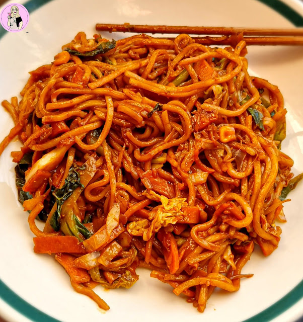

Noodles

Description
This is the most delicious noodles you'll ever taste, its combination of a go to cheap meal and delicous fresh ingredients we only started using once we signed up for Box Divvy.
The carrots in this recipe can be substituted for regular carrots, but we find dutch carrots taste so much better. Feel free to addsome protien such as chicken or beef strips.
Ingredients
- 2 x Mi Goreng Noodle packets
- 4 x Dutch Carrots
- 1 x Head of Broccoli
- 1/2 Onion
- Neutral Cooking Oil
Steps
- Cook the Noodles according to packet directions and drain setting 1/4 cup some of the water
- Open the flavour satchets and put them in a small bowl with the noodle water
- Slice the Onion, cut up the Carrots into thin strips and cut the Broccoli in to small flowerettes, cutting the soft part of the stem into small cubes
- Heat wok over a high heat and add some Oil
- Add the Onion to the wok and sti fry until it becomes translucent and slightly brown
- Add the Carrots and Broccoli to the wok and stir fry until they are soft and slightly charred
- Add the drained Noodles to the wok and stir fry for another minute
- Turn the heat down to low and add the prepared sauce stir frying for anothe 30 seconds
- Serve hot